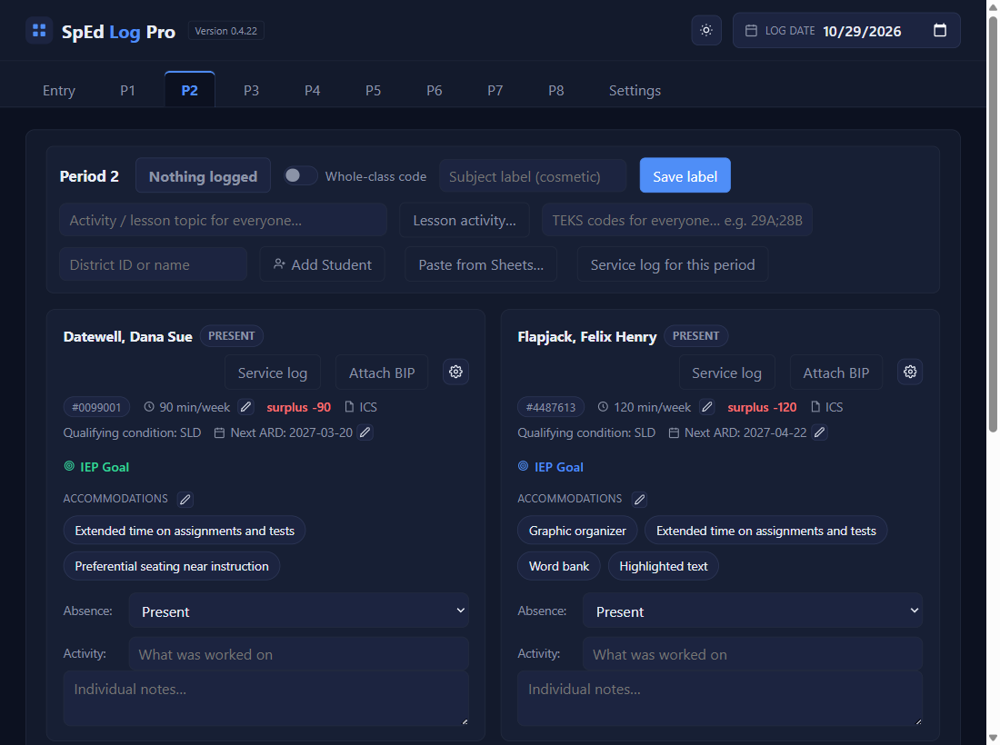
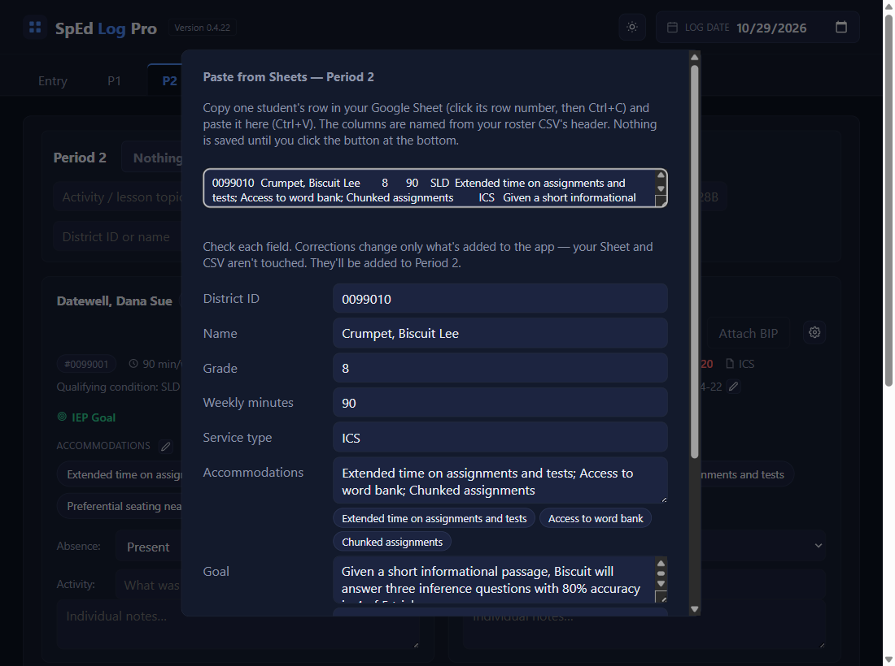

Paste & report
Paste a week into the service log
⏱ About 3 minutes per student🔁 Weekly, or whenever you likeYou need: every day in the range logged
Why: this is what the app is for. It turns your saved days into text for the real service log, lined up to the right rows, and tells you exactly which cell to paste into.
1
Open the student’s Service log and pick a range
On the card, click Service log, then This week (the week of the Log date), Last week, This grading period, Everything logged so far, or Custom range.

2
Read the cell it names, then click Copy
The line above the text says where it goes: paste at B63 is the row of the first date in the range. Copy says Copied — not yet confirmed pasted.
3
In the real log, click that cell and press Ctrl+V
Open the student's service log in Google Sheets, click B63 (column B, the row for the first date), and press Ctrl + V. Sheets spreads it across columns B to G. Column A, the dates, is never touched.
Drawing of your service log in Google Sheets
A
B
C
D
E
F
G
24
Date
Time
ICS / RES
Accom / Mods
Activities
Progress
62
End of 1st 9 Wks / Beginning of 2nd 9 Wks
63
10/5/2026
32
ICS
Extended time on assignments…
Vocabulary preview
64
10/6/2026
32
ICS
Extended time on assignments…
Guided notes
65
10/7/2026
32
ICS
Extended time on assignments…
Map activity
66
10/8/2026
32
ICS
Extended time on assignments…
Primary source pairs
67
10/9/2026
32
ICS
DECLINED: Small group…
Fireside Chat Analysis
Worked well with a partner.
4
Missing days? Fill them in first
If any day in the range has nothing saved, you get the list of those dates instead of the text. Log or code them (see Catch up on missed days), then pick the range again.

✓ You'll know it worked
- Each date in column A has its own minutes in B and the code or service type in C.
- Your note is in column G, the activity in E.
✕ Avoid these
- Clicking the wrong cell. Always the cell the line names: everything shifts if you start a row off.
- Something already in column G. Before your first paste, make sure G is empty in that student's log.
- Forgetting to re-copy. Changed something after pasting? Copy that range again and paste over it.
⚠ If you see this
This can't be exported yet — 5 dates still need minutes or a code:Do step 4.
This week is not finished. These minutes will change if you log more days.Fine to paste; copy the week again once it's done.
This range crosses a nine weeks boundary, so it comes out as 2 pastes.Each block has its own cell and Copy button. Paste each one where it says.